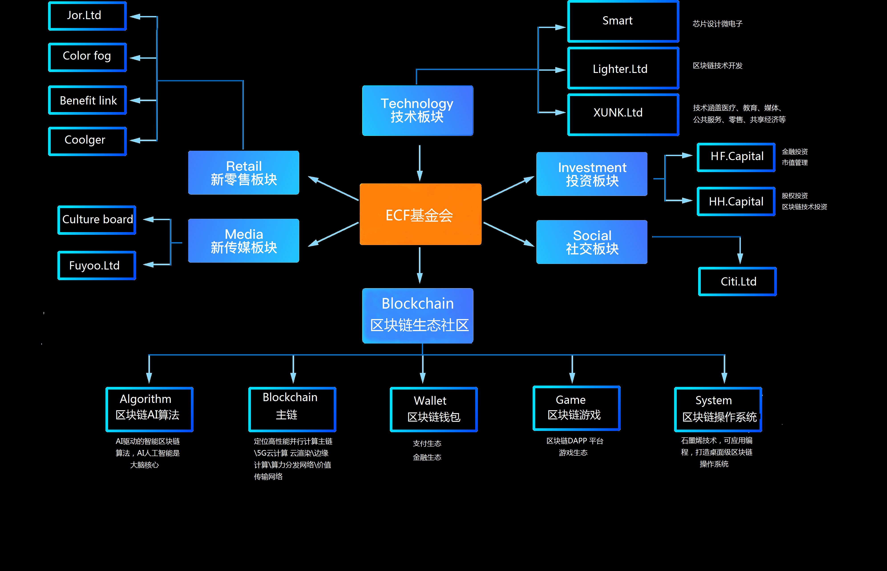

以太生态
什么是以太生态？
以太生态就是指一切生物的生存状态，以及它们之间和它与环境之间环环相扣的关系。对于区块链项目来说，以太生态就是在底层基础公链（环境）之上所运行的各种去中心化应用的生存状态以及他们之间与底层公链（环境）之间环环相扣的关系。公链（环境）的目的无疑是为了开发各种应用或者与区块链相关的应用，也就是通常所说的“落地”最终通过他们创造价值。

以太生态推进区块链3.0时代的到来,为时代奉献出智能、高效、规模化、多功能、多维度的区块链生态圈和应用场景方案。并且以太生态不仅仅为参与区块链的项目方、推广商、商家、会员、交易所等组织提供一站式综合性服务。除强大的区块链生态布局外,在未来将要引进了AI、大数据、IOT、VR等诸多被称为“新时代互联网颠覆技术”的技术手段,汇集其存在的技术优势,试图建立适应各个场景应用。以太生态也将在应用层面,将基于区块链技术打造出适应个人或机构工作、生活息息相关的应用模式,为其提供底层技术基础支持,以太生态也将通过多链并行、模块化以及智能合约等运行机制的支持,不断应对各种技术漏洞带来的应用场景不相匹配的问题,为未来各种应用场景搭建出属于其自身的应用圈。不断规避因技术乱象而导致的生态紊乱问题。